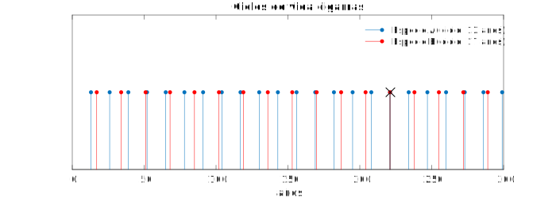
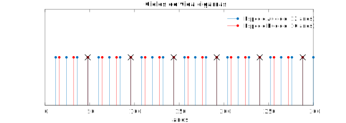
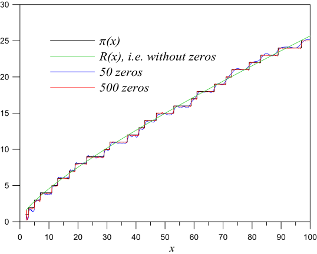

La música de los números primos
No recuerdo la primera vez que escuché el concepto de número primo. Seguramente fue durante la primaria cuando algún profesor me enseñó ese extraño concepto sin aparente importancia.
Los números primos pertenecen al grupo de conceptos que todo el mundo conoce, o al menos ha escuchado, pero que suele caer en el olvido tan pronto te alejas del mundo de las matemáticas. Por ello, cabe recordar que un número primo es aquel que únicamente es divisible por él mismo y la unidad (e.g. 13 sería primo ya que sólo es divisible entre 13 y 1).
Fue durante la secundaria cuando nuestro profesor de matemáticas nos enseñó la descomposición factorial. En este proceso descompones cualquier número en una multiplicación de números primos:
Recuerdo las típicas reglas para saber rápidamente si un número era o no divisible por 2, 3 o 5:
- Divisible entre 2. Simplemente si el número es par será divisible por 2.
- Divisible entre 3. Si la suma de las cifras da como resultado un número divisible entre 3 (e.g. 225 -> 2+2+5=9).
- Divisible entre 5. Si acaba en 0 o 5.
A partir del 7 la tarea se complica. Ya no es tan obvio ver si un número es divisible entre 13 o entre 19. Para estos casos necesitaremos realizar una división; si el resto es 0 será divisible. Carl Gauss desarrolló la matemática modular que, entre otras cosas, nos permite obtener el resto de una división. Carl Gauss fue posiblemente el primer gran matemático (también era físico y astrónomo) que más avances hizo en el campo de los números primos llegando a desarrollar la conjetura de los números primos. Necesitaré un post dedicado sólo a Gauss para explicar su relevancia en este tema. Antes que él hubo ya curiosos que se interesaron por el tema. Euclides en el 300 a.C ya demostró que los números primos eran infinitos. Una demostración maravillosa ya que sin saber como generar números primos fue capaz de afirmar que la lista sería interminable. Ya en el siglo XVII el monje Mersenne se carteaba con el matemático Fermat para discutir sobre el tema. Lo más interesante de Mersenne era que más que relacionar estos números con temas litúrgicos los vinculaba a la música y sus armónicos. Todos los interesados intentaron de manera casi desesperada a través de fórmulas conseguir generar números primos.
¿Invención o realidad?
Es la cuestión principal: ¿son los números primos una invención nuestra o son un descubrimiento de la humanidad. En la película Contact, Jodie Foster descubre una señal de vida inteligente proveniente del espacio. Esta señal radio se repite con un patrón... el de los números primos. Esta escena pone de manifiesto la inmutabilidad de estos números ya que si el patrón de envío de mensajes hubiera sido otro, la protagonista podría haber pensado que se trata un patrón aleatorio. Utilizar como patrón una secuencia de números primos indica de manera inequívoca que el mensaje fue enviado por seres inteligentes. Por lo tanto, en la película, adaptación de una obra de Carl Sagan, se acepta la teoría de que los números primos existen de por sí y que nosotros simplemente los hemos descubierto.
En el mundo animal también encontramos a los números primos. En el libro La Música de los Números Primos se explica un ejemplo interesante. Existen dos especies de cigarras que tienen ciclos de vida de 13 y 17 años (ambos números primos). Durante estos años se alimentan de la savia de la raíces de los árboles. El último año se metaforsean en adultos y salen del suelo en masa. Es entonces cuando se apoderan del bosque en una sola noche para iniciar aparearse y poner huevos. Al cabo de seis semanas, mueren. Pero, ¿por qué han escogido estas dos especies ciclos de vida de 13 y 17 años?
Desarrollando ciclos de vida que duren un número primo de años se aseguran coincidir lo mínimo posible. Ambas especies deberán compartir el bosque solamente una vez cada 13 x 17 = 221 años.
Como se puede ver en la anterior gráfica en 300 años tan sólo coinciden 1 vez, el año 221 que habíamos dicho antes. Veamos que pasaría si modificamos esos ciclos de años por números no primos como el 12 y el 16.
En este caso, en 300 años coinciden 6 veces. Los años 48, 96, 144, 192, 240 y 288. De esta comparación se puede deducir que los números primos evitan una competencia excesiva entre ambas especies.
Otro caso curioso lo explica el neurólogo Oliver Sacks en el libro El hombre que confundió a su mujer con un sombrero. En el capítulo Gemelos, Oliver Sacks narra los encuentros que tuvo con los gemelos Michael y John, dos chicos que habían sido diagnosticados con autismo. Después de diferentes visitas a casa de los gemelos, Sacks llega a la conclusión de que son lo que se conoce como "sabios idiotas". Su forma de hablar es infantil, imposibilitando mantener una conversación adulta. Sin embargo, son capaces de averiguar en qué día cayó una cualquier fecha y la fecha de Pascua de cualquier año. También poseen una gran memoria, siendo capaces de recordar números de 300 cifras o decirte el día y año que aconteció un suceso político. Por ello, los gemelos eran habituales en programas televisivos dónde los trataban como atracción circense.
Hay dos escenas reveladores para Sacks, donde descubre que los gemelos realmente poseen habilidades sobrenaturales. La primera ocurre cuando de una mesa se cae una caja de cerillas al suelo.
“Se cayó de la mesa una caja de cerillas y su contenido se esparció por el suelo. “Ciento once” gritaron ambos simultáneamente, y luego en un murmullo John dijo “Treinta y siete”. Michael repitió esto, John lo dijo por tercera vez y calló. Conté las cerillas (me llevó un rato) y había 111. - ¿Cómo pueden contar tan de prisa? – pregunté. - Nosotros no contamos – dijeron -. Nosotros vimos las 111. - ¿Y por qué murmuraron “37” y lo repitieron tres veces? - 37, 37, 37, 111 – dijeron al unísono. El que viesen la “111-idad” en un relampagueo era extraordinario, pero quizá no más extraordinario que el oído absoluto de un concertista, una especie de tono absoluto para los números. Pero luego habían descompuesto el número en tres partes iguales, sin saber siquiera lo que eran los factores, sin saber qué era multiplicar y dividir."
En esta escena es impresionante, ya que una persona estándard es incapaz de ver más de 6 o 7 objetos a la vez. Además, los gemelos, eran capaces de hacer una descomposición factorial instantánea. ¿Utilizaban algún tipo de algoritmo que nadie conocía?
Aunque la escena que realmente marcaría un antes y un después ocurrió una tarde en la que Sacks los descubrió mientras se divertían jugando. Sentados en un rincón se intercambiaban números. John decía un número de seis cifras en voz alta y Michael le replicaba con otro número de seis cifras. Hasta aquí, todo normal. Sacks se limitó a apuntar los números que iban diciendo. Al llegar a casa Sacks empezó a investigar los números. No podían ser números aleatorios. Era algún tipo de lenguaje secreto ya que la felicidad y el placer que les producía a los gemelos intercambiarse dichos números debía de tener una razón. Después de investigar, Sacks comprobó que todos los números que se intercambian los gemelos eran primos.
Sacks esperó a que los gemelos volvieran a jugar a su particular juego de intercambio de números. Fue ahí cuando aprovechó para acercarse a ellos, sentarse y unirse e introducir un número primo de 8 cifras. Los gemelos lo aceptaron ya que habían visto que Sacks entendía el juego y además les había puesto un reto con un número de 8 cifras. Obviamente, Sacks se había traído una lista con números primos extraídos de algún libro de matemáticas. Cualquier humano necesita una calculadora y horas para determinar si un número de 6 cifras es primo o no. En el turno de John tardó unos 4 o 5 minutos en pensar. Esta vez introdujo en el juego un número de 9 cifras. Sacks siempre introdujo un número de diez cifras. Al cabo de 1 hora los gemelos estaban intercambiándose números primos de 20 cifras. Sacks había dejado de jugar porqué era incapaz de comprobar en su libro números primos tan grandes.
A los 37 años, antes de que alguien pudiera descubrir cómo lo conseguían, los gemelos fueron separados por los médicos. Creían que su lenguaje de números les impedía un correcto desarrollo.
La actualidad
Además de para satisfacer a los matemáticos, ¿cúal es el sentido de conocer la distribución de los números primos? ¿De qué sirven? Desde el punto de vista matemático sería un gran avance en conocer la distribución de los números que son la base del resto. De la misma manera que los químicos tienen su tabla periódica con los elementos sobre los que se construye cualquier molécula, los matemáticos ansían encontrar una ecuación que describa la aleatoriedad de los números primos.
En los 70, tres científicos R. Rivest, A. Shamir y L. Adleman mientras investigaban sobre los números primos idearon el modo de utilizarlos para la seguridad electrónica. De manera astuta en vez de intentar descubrir nuevos números primos rodearon el problema y utilizaron la incapacidad para producir nuevos números primos en una virtud. Si somos incapaces de descubrir la secuencia de números primos y nos cuenta tanto saber si un número es primo o no, ¿por qué no utilizar los números primos para encriptar nuestras transacciones? Y aquí nació el algoritmo RSA de encriptación. En la actualidad, cualquier transacción comercial en Internet depende de números primos de 100 cifras. La idea muy simplificada se basa en utilizar dos números primos muy grandes. Ningún ordenador, por muy potente que sea, es capaz de calcular a través del producto que dos primos lo originaron. Actualmente para resolver el cifrado AES de 256 bits un super-ordenador necesitaría más tiempo que el que tiene actualmente el universo para resolver el problema.
La Hipótesis de Riemann
Bernhard Riemann fue capaz de unir tres conceptos aparentemente inconexos y relacionarlos entre sí; los números imaginarios que había creado Cauchy; la función zeta \(\zeta(x)\), creada por Euler y representada como una serie armónica formada por números primos; y la conjetura de los números de primos de Gauss. La Hipótesis de Riemann, formulada en 1859, es una conjetura sobre la distribución de ceros de la función zeta de Riemann \(\zeta(s)\). La obtención de los ceros no triviales de esta función permite aproximarse a la distribución de números primos \(\pi(x)\). Mucha gente profetiza acerca de qué habría pasado si la gobernanta de Riemann no hubiera quemado todos sus apuntes y cartas mientras ordenaba su estudio. Su ensayo de tan sólo diez páginas indica que Riemann se creía capaz de demostrar la mayor parte de ceros de su función. Debido al carácter perfeccionista de Riemann es ya un milagro que escribiera el ensayo de diez páginas, dadas las lagunas que contenía. Aquellas diez densas páginas serían las únicas que Riemann destinaría a los números primos.
La gráfica, sacada de este artículo, nos muestra la superposición de diferentes funciones.
Este toolkit the Wolfram permite calcular la función de Riemann \(R(x)\) en función del número de ceros que incluyas y ver como se aproxima a la distribución de números primos \(\pi(x)).
A modo de curiosidad, la Hipótesis de Riemann es uno de los 7 problemas del milenio. Actualmente sólo se ha resuelto 1 de los 7 problemas. Estos problemas, publicados en la web del Instituto Clay muestra el problema por si alguien se anima. El premio es de 1,000,000$ y la inmortalidad que es lo que realmente buscan. Digo esto después de que el matemático ruso Grigori Perelmann rechazara la medalla Fields (el Nobel de las matemáticas) y el premio en metálico después de resolver la Conjetura de Poincaré, el único problema resuelto.
La imagen de la cabecera corresponde a la gráfica en coordenadas polares de los primeros 5000 y 50000 números primos.